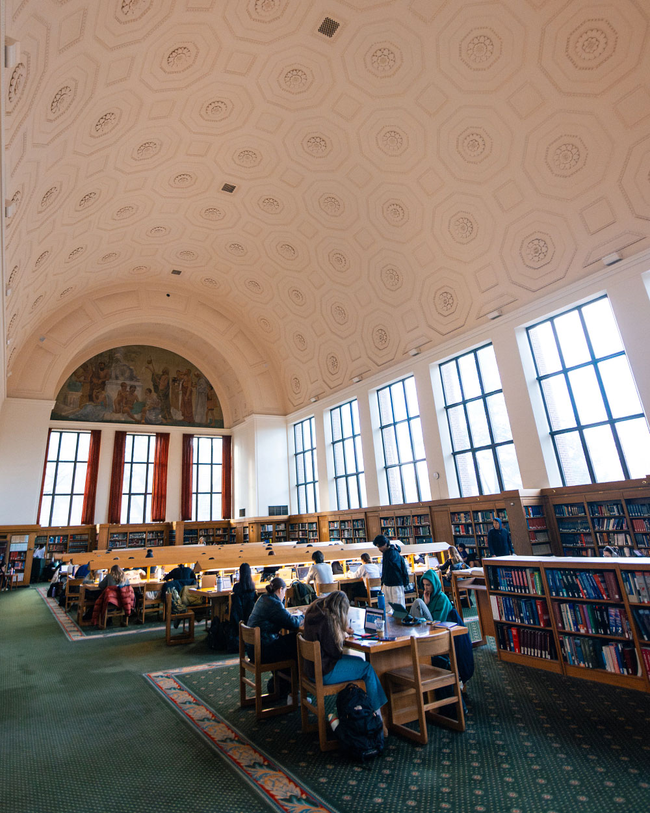
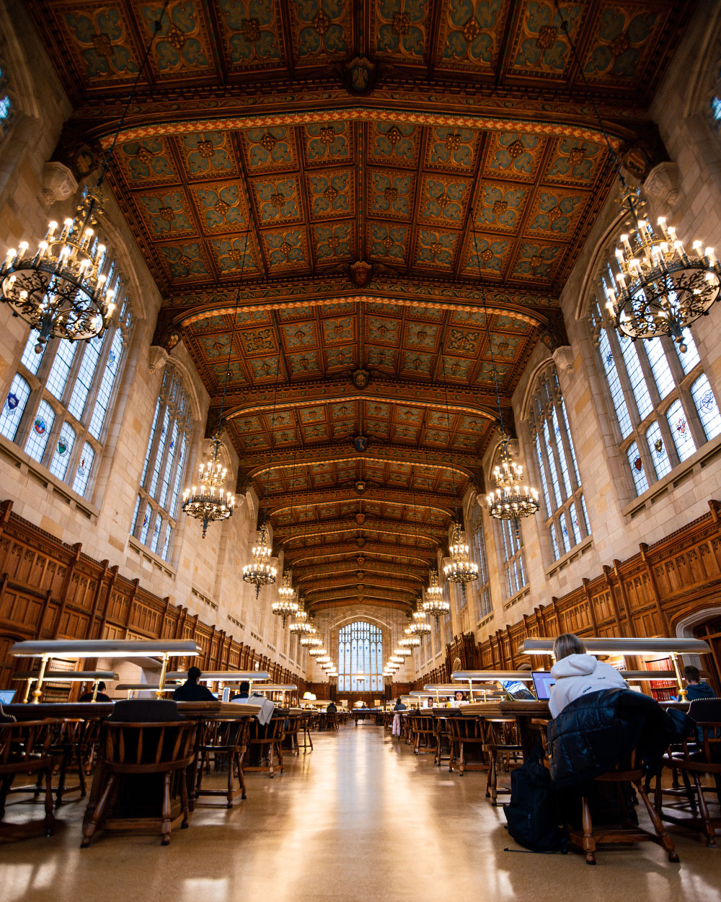

Study Spaces at the University of Michigan
Study Spaces at U-M is a tool designed to help you find and reserve designated study spaces, computer stations, a space for you to take a remote class, or just a dedicated quiet touchdown spot between classes.
It's understandable that many might be anxious that there aren't many spaces on the site, after going through the last academic year where the primary method of accessing study space was to reserve.
As we proceed into the next academic year, several spaces have been designated as open and reservations are not needed. Some units took spaces offline that were offered, as they currently have in-person classes this semester, or an increase in need for event space.
- Please be aware that there are walk-in study spaces again, and that this site is not an exhaustive list of study spaces.
- Many Campus spaces are back to full availability.
- Spaces at the Library are walk-in while Study Spaces are reconfigured with reservable space. Currently, there are 1st floor tables and 2nd floor reservable rooms. The Library will be a mix of walk-in and bookable spaces.
Explore what’s available and where
See How to Reserve Study Space for reservation instructions.
NOTE: This site lists study spaces available to the U-M student community at large. Students may have access to other spaces directly through their schools, colleges, and departments.